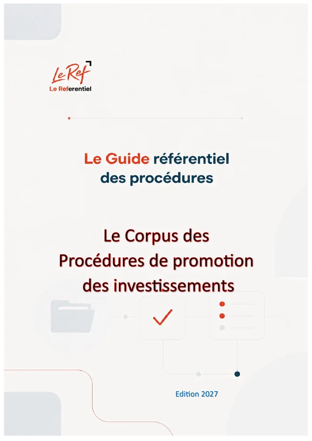

Procédures, dispositifs d'appui et de financement · INV · Édition 2026 · à jour au 11/10/2026
L'investissement au Maroc
Le Corpus des Procédures de promotion des investissements
Les institutions de l'investissement (CRI, CRUI, Commission nationale), les dispositifs de soutien de la Charte et la convention d'investissement, les procédures et les dispositifs d'appui et de financement.
- 183paragraphes
- 40chapitres
- 5parties
- 41fichiers JSON
- 119pages (PDF)
Disponible prochainement (option d'achat)
Pages préliminaires et annexes
Contenu
183 paragraphes · 40 chapitres · un fichier JSON par chapitrePartie 1Les institutions et la répartition des compétences
19 paragraphes
Partie 2Les dispositifs de soutien et la convention d'investissement
23 paragraphes
2.1 Le dispositif de soutien principal : éligibilité et calcul des primes
- 2-001Les définitions qui conditionnent tout le calcul
- 2-002Les conditions d'éligibilité (article 6 D)
- 2-003Le calcul du montant d'investissement primable (article 2 D)
- 2-004Les primes communes (article 7 D)
- 2-005La prime territoriale (article 8 D ; article 13 LC)
- 2-006La prime sectorielle (article 9 D ; article 14 LC)
- 2-007Les plafonds
- 2-008Exemples de calcul
2.2 La convention d'investissement : procédure, contenu et exécution
- 2-010Pourquoi une convention ?
- 2-011Le contenu obligatoire de la convention (article 23 D)
- 2-012Procédure d'obtention d'une convention du dispositif principal
- 2-013Délai de réalisation et avenants
- 2-014Le déblocage des primes
- 2-015Le contrôle et la restitution
- 2-016Les clauses de règlement des différends
- 2-017Les conventions conclues sous l'ancienne charte
Partie 3Les procédures opérationnelles du cycle de vie du projet
30 paragraphes
3.5 Les procédures douanières
- 3-040Les prérequis de l'importateur et de l'exportateur
- 3-041Le circuit de dédouanement à l'importation
- 3-042Le circuit de dédouanement à l'exportation
- 3-043Les régimes économiques en douane (RED)
- 3-044Les magasins et aires de dédouanement (MEAD)
- 3-045Les statuts de confiance
- 3-046Effets personnels et véhicules des investisseurs qui s'installent
3.6 La réglementation des changes (IGOC 2026)
- 3-050Les principes
- 3-051Immatriculation et catégorisation
- 3-052Payer ses importations de biens
- 3-053Payer des services importés
- 3-054Encaisser ses exportations
- 3-055Opérations spécifiques
- 3-056L'investissement étranger au Maroc (articles 170-177)
- 3-057L'investissement des résidents à l'étranger (articles 178-188)
- 3-058Les financements extérieurs
Partie 4Pilotage de projet et feuille de route intégrée
11 paragraphes
4.1 Appliquer la gestion de projet au parcours administratif
- 4-001Un projet d'investissement est d'abord un projet
- 4-002Les cinq groupes de processus appliqués à l'investissement
- 4-003L'organigramme des tâches type (OT / WBS)
- 4-004Le chemin critique d'un projet industriel type
- 4-005Le registre des risques réglementaires
- 4-006Gouvernance et parties prenantes
- 4-007Le tableau de bord des engagements
Partie 5Annexes
100 paragraphes
5.7 Le dispositif principal de soutien à l'investissement
- 5-060Qui peut en bénéficier
- 5-061La structure des primes
- 5-062Métiers d'avenir et montée en gamme (prime de 3 %)
- 5-063Projets d'investissement durables (prime de 3 %)
- 5-064Projets d'intégration locale (prime de 3 %)
- 5-065La prime territoriale
- 5-066La prime sectorielle (5 %)
- 5-067Procédure
- 5-068Ce que disent le décret 2-23-1 et ses arrêtés
5.9 Le dispositif de soutien aux très petites, petites et moyennes entreprises (TPME)
- 5-090Le dispositif de soutien aux très petites, petites et moyennes entreprises (TPME) — présentation
- 5-091Définitions utiles
- 5-092Conditions concernant l'entreprise
- 5-093Conditions concernant le projet
- 5-094Le calcul du montant primable
- 5-095Les trois primes
- 5-096La procédure, étape par étape
- 5-097Les pièces du dossier (arrêté 3.53.25)
- 5-098Le versement des primes
- 5-099Les provinces et préfectures par catégorie (arrêté 3.54.25)
- 5-100Les branches d'activité éligibles par région et les activités prioritaires
5.13 Programmes de Maroc PME, de l'industrie et du tourisme
- 5-160Istitmar PME (Kits 2023 et 2024)
- 5-161Programme d'appui à l'innovation industrielle (ancien Tatwir R&D et Innovation)
- 5-162Tatwir Croissance Verte (Kits 2023 et 2024)
- 5-163Mouwakaba (six volets, Kits 2023 et 2024)
- 5-164Usine modèle INMAA
- 5-165Salama PME
- 5-166Go Siyaha
- 5-167Cap Hospitality
- 5-168Programmes d'incubation de la SMIT
- 5-169Fonds de développement industriel et d'investissement (Kit 2023 seul)
- 5-170Accélérateur d'efficacité énergétique dans l'industrie (Kit 2023 seul)
5.14 Appui à l'export
5.18 Marchés de capitaux, fonds d'investissement et financement collaboratif
- 5-220Introduction en bourse : le Marché Principal (grandes entreprises)
- 5-221Marché Alternatif (PME)
- 5-222Avantage fiscal à l'introduction en bourse
- 5-223Fonds Mohammed VI pour l'Investissement
- 5-224Les fonds d'investissement : principe
- 5-225Annuaire des fonds et des clubs de business angels
- 5-226Financement collaboratif (crowdfunding)